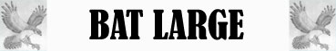
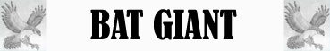

Volo Silenzioso;
Volo Silenzioso;
Stridio Acuto;


|
|
Tipologia | BAT - LARGE | BAT - GIANT |
| Ambiente/Habitat | Qualsiasi (non artico, desertico) | Qualsiasi (non artico, desertico) | |
| Frequenza | Uncommon | Rare | |
| Organizzazione | Piccolo Stormo | Solitario o Piccolo Stormo | |
| Periodo di Attività | Notte | Notte | |
| Dieta | Onnivoro | Onnivoro | |
| Intelligenza | Animal Intelligent [1] | Semi Intelligent [2] | |
| Punti Combattimento | Nessuno | Nessuno | |
| Tesoro | Vedi Sotto | Vedi Sotto | |
| Allineamento Dominante | Neutrale | Neutrale | |
| Numero di Apparizione | 2d4+2 | 1d10: (1-5) 1 (6-10) 1d4+1 | |
| Classe Armatura | 6 [10 base, 2 corazza, 2 destrezza] | 5 [10 base, 3 corazza, 2 destrezza] | |
| Movimento | 2 esagoni /Volare 8 esagoni | 2 esagoni /Volare 10 esagoni | |
| Dadi Vita | 1d10: (1-6) 1 (4-10) 2 | 1d10: (1-6) 3 (4-10) 4 | |
| Thac0 | [3 DV] 19 [4 DV] 18 | [3 DV] 17 [4 DV] 16 | |
| Numero di Attacchi | Morso | Morso | |
| Danni | 1d4 (taglio) | [3 DV] 1d6+1 [4 DV] 1d8+1 | |
| Poteri Offensivi | Istinto Predatorio; Volo Silenzioso; |
Istinto Predatorio; Volo Silenzioso; Stridio Acuto; |
|
| Poteri Difensivi | Volo Irregolare; | Volo Irregolare; | |
| Poteri Generici | Nessuno; | Nessuno; | |
| Vulnerabilità | Nessuna; | Nessuna; | |
| Resistenza alla Magia | Nessuna; | Nessuna; | |
| Sensi | Vista Comune, Sonar [30 metri]; | Vista Comune, Sonar [30 metri]; | |
| Dimensioni | Medium (1,20 m. apertura alare) | Large (2,50-3 m. apertura alare) | |
| Morale | Unsteady (7) | Steady (12) | |
| Valore in Punti Esperienza | [1 DV] 115 [2 DV] 138 | [3 DV] 287 [4 DV] 418 |
| MODIFICATORI AI TIRI SALVEZZA [BAT-LARGE] | |||||||||||||||||||||||
| COR | 0 | 52 | ENV | 0 | 58 | MAG | 0 | 65 | MAL | +10 | 41 | MEN | 0 | 63 | RIF | 0 | 57 | ROB | 0 | 56 | VEL | 0 | 53 |
| MODIFICATORI AI TIRI SALVEZZA [BAT-GIANT] | |||||||||||||||||||||||
| COR | 0 | 49 | ENV | 0 | 54 | MAG | 0 | 62 | MAL | +10 | 37 | MEN | 0 | 60 | RIF | 0 | 56 | ROB | 0 | 51 | VEL | 0 | 44 |
Descrizione
Entrambe queste creature rappresentano versioni giganti dei comuni pipistrelli. Come per i comuni pipistrelli anche per le loro versioni grandi e giganti esistono numerose specie dalla forma e dell'habitat estremamente diverso. Il corpo di queste creature assomiglia a quello di un topo con la testa più piccola e munita di grosse orecchia. Le ali sono di membrana costituita da pelle sottile ma allo stesso tempo resistente ed elastica.
Combat
Queste creature attaccano i loro avversari di notte utilizzando il loro sonar per colpirli con precisione anche nel buio più assoluto. Grazie al loro volo silenzioso questi esseri possono piombare sui loro avversari di sorpresa sorprendendoli con facilità. Il morso di queste creature può diffondere una temibile malattia denominata Rabbia Animale. Esclusivamente la versione gigante di pipistrello può emettere un suono lancinante capace di stordire e ferire le proprie vittime.
ISTINTO PREDATORIO (Moderate Special Ability): La creatura possiede un forte istinto predatorio, per tale motivo costei riceve un bonus costante di +1 alla Thac0 con i suoi attacchi.
VOLO SILENZIOSO (Lesser Special Ability): La creatura riesce a volare in modo così silenzioso da imporre alle proprie vittime una penalità di -3 al tiro sulla sorpresa.
MALATTIA [MORSO] (Moderate Special Ability): I morsi di questa creatura possono infettare la vittima con una malattia infettiva. In particolare, alla fine di uno scontro, ogni creatura che è stata ferita da questa creatura avrà una possibilità pari all'1% per danno effettivamente subito di essere stata esposta direttamente alla fonte della seguente malattia.
Rabbia Animale
Tipo di Contagio:
Esposizione diretta alla fonte
Tiro salvezza:
Nessun Modificatore
Incubazione:
1d8+2 giorni
Prima fase: 2d20+20 giorni = Gli occhi della vittima diventano iniettati di sangue e la sua salivazione aumenta in modo impressionante costringendo la creature a sbavare periodicamente. La creatura diviene aggressiva ricevendo un bonus di +1 a tutti gli attacchi fisici (si consideri un bonus dovuto alla forza della creatura). La creatur, però, avrà il 25% di probabilità di fallire nel mantenere ogni forma di concentrazione e non potrà effettuare riposo totale. Tiro salvezza: Nessun Tiro Salvezza Richiesto
Seconda fase: 1d6 giorni = La vittima si disidrata velocemente e cade in uno stato comatoso caratterizzato da spasmi violenti. Tiro salvezza: Malus di - 10 %
Ultima fase: Morte della Creatura
Immunizzazione: Un anno
Note: Gli Gnoll ed i canidi di ogni tipo ricevono una penalità di -10% a tutti i tiri salvezza previsti da questa malattia.
STRIDIO ACUTO [BAT - GIANT] (Superior Special Ability): Questa creatura è in grado emettere un suono acuto e lacerante al quale lei stessa è immune. Si tratta di un'azione complessa che la creatura effettua a fattore iniziativa +1. Tutte le creature che si trovano entro 12 metri di distanza dovranno superare un tiro salvezza su robustezza. Se il tiro salvezza fallisce la vittima subirà 3 danni sonori (agli organi uditivi) e risulterà incapacitata per il resto del round in corso e per tutto quello immediatamente successivo. Si noti che questo potere richiede che il suono possa diffondersi fino alle vittime (se, ad esempio, la creatura è sotto effetto di una magia di silenzio questo potere non potrà essere effettuato). Questo potere ha effetto solo sulle creature dotate di apparati uditivi funzionanti di tipo animale (non avendo alcun effetto su non morti, costruiti, esseri extraplanari e creature che non posseggono apparati uditivi come le melme). Una volta utilizzata questa abilità speciale la creatura non può utilizzarla nuovamente nei due round di combattimento immediatamente successivi.
VOLO IRREGOLARE (Moderate Special Ability): L'incredibile manovrabilità in volo di questa creatura unita al suo modo di volare irregolare caratterizzato da continue manovre e virate improvvise impone a tutti gli avversari desiderino colpirla con attacchi a distanza (armi da tiro, da lancio od effetti equivalenti) un malus di -3 al proprio tiro per colpire.
Habitat/Society
L'habitat di queste creature varia notevolmente. Di giorno questo essere resta appeso su spuntoni rocciosi all'interno di caverne o sui rami di imponenti alberi per uscire solo di notte e cacciare sfruttando il proprio sonar che dona a questo essere una superiorità tattica nelle notti buie contro i suoi avversari.
Ecology
Queste creature depredano gli allevatori attaccando il bestiame ed, in periodi di carestia, si spingono ad attaccare i luoghi civilizzati ed i suoi abitanti. Spesso quindi sono cacciati e braccati anche se svolgono un ruolo importante per la caccia che effettuano contro gli insetti giganti tenendone a bada il numero.
[BAT LARGE]
Mystical Resource Sourge
(Ali) Quantità: 1, Presenza 10% - Scuola di Magia:
Alteration
- Qualità della Risorsa: Common.
[BAT GIANT]
Mystical Resource Sourge
(Ali) Quantità: 1, Presenza 25% - Scuola di Magia:
Alteration
- Qualità della Risorsa: Common.
|
|
Ambiente/Habitat | Foreste Temperate e Zone Palustri |
| Frequenza | Rare | |
| Organizzazione | Solitario o Piccolo Stormo | |
| Periodo di Attività | Qualsiasi | |
| Dieta | Carnivora | |
| Intelligenza | Semi Intelligent [4] | |
| Punti Combattimento | Nessuno | |
| Tesoro | Occasionale (nella tana) | |
| Allineamento Dominante | Neutrale Malvagio | |
| Numero di Apparizione | 1d10: (1-5) 1 (6-10) 1d3+1 | |
| Classe Armatura | 4 [10 base, 4 corazza, 2 destrezza] | |
| Movimento | 2 esagoni /Volare 10 esagoni | |
| Dadi Vita | 5 | |
| Thac0 | 15 | |
| Numero di Attacchi | Morso | |
| Danni | 1d6+2 (Taglio) | |
| Poteri Offensivi | Istinto Predatorio; Volo Silenzioso; Frenesia di Sangue; Sbranare; |
|
| Poteri Difensivi | Risucchio di Sangue; Volo Irregolare; |
|
| Poteri Generici | Nessuno; | |
| Vulnerabilità | Nessuna; | |
| Resistenza alla Magia | Nessuna; | |
| Sensi | Vista Comune, Sonar [18 metri]; | |
| Dimensioni | Medium (1,80 m. apertura alare) | |
| Morale | Elite (14) | |
| Valore in Punti Esperienza | 616 |
| MODIFICATORI AI TIRI SALVEZZA | |||||||||||||||||||||||
| COR | 0 | 45 | ENV | +5 | 46 | MAG | 0 | 59 | MAL | +5 | 39 | MEN | 0 | 57 | RIF | 0 | 51 | ROB | 0 | 49 | VEL | 0 | 46 |
Descrizione
Questa creatura si presenta come un mostruoso pipistrello dall'apertura alare di quasi due metri. La sua pelle è rossastra e si notato grosse vene rosse e pulsanti che si diramano sull'intero corpo della creatura visibili in special modo all'interno della membrana delle ali. La sua bocca è fornito di un becco robusto ed acuminato dal quale fuoriesce una lingua robusta e dal colore rosso intenso.
Combat
Queste creature mostruose attaccano i loro avversari sia di giorno che di notte utilizzando, quando occorre, il loro sonar per colpirli con precisione anche nel buio più assoluto. Grazie al loro volo silenzioso questi esseri possono piombare sui loro avversari di sorpresa sorprendendoli con facilità. Una volta assaggiato il sangue di una vittima, presi da un'orrenda frenesia di sangue difficilmente smettono di attaccarla o cambiano bersaglio fino a che non l'hanno uccisa.
ISTINTO PREDATORIO (Moderate Special Ability): La creatura possiede un forte istinto predatorio, per tale motivo costei riceve un bonus costante di +1 ai suoi tiri per colpire.
VOLO SILENZIOSO (Lesser Special Ability): La creatura riesce a volare in modo così silenzioso da imporre alle proprie vittime una penalità di -3 al tiro sulla sorpresa.
FRENESIA DI
SANGUE
(Superior Special Ability):
Quando questa creatura colpisce il proprio avversario assaggiandone il sangue,
entra in uno stato di frenesia. Questo potere si attiva solo se la creature
riesce effettivamente a danneggiare con il proprio morso una creatura vivente
dotata di corpo organico di tipo animale.
A partire dal round successivo
a quello in cui questo potere si è attivato, per tutto il resto del
combattimento, questa creatura riceverà un bonus di
+1 al tiro per colpire
e di +2 al dado base dei danni
(tiro che quindi migliora il lancio del dado entro il limite del dado stesso)
quando attaccherà il medesimo avversario di cui ha assaggiato il sangue.
SBRANARE
[MORSO]
(Lesser Special Ability):
Quando questa creatura colpisce il proprio avversario con l'attacco indicato può
attaccare nuovamente la medesima creatura con lo stesso attacco
subendo una penalità di - 1 al tiro per
colpire. Si consideri quest'attacco
come un attacco multiplo successivo non simultaneo.
RISUCCHIO DI SANGUE [MORSO] (Superior Special Ability): Ogni volta che questa creatura colpisce con l'attacco indicato un avversario dotato di corpo organico di tipo animale rigenera le proprie ferite nutrendosi del sangue della vittima. In particolare, questa creatura rigenererà immediatamente un ammontare di punti ferita pari alla metà dei danni effettivamente subiti dalla vittima con l'attacco indicato (arrotondato per difetto).
VOLO IRREGOLARE (Moderate Special Ability): L'incredibile manovrabilità in volo di questa creatura unita al suo modo di volare irregolare caratterizzato da continue manovre e virate improvvise impone a tutti gli avversari desiderino colpirla con attacchi a distanza (armi da tiro, da lancio od effetti equivalenti) un malus di -3 al proprio tiro per colpire.
Habitat/Society
Queste creature vivono nelle foreste temperate e nelle zone palustri. A differenza dei comuni pipistrelli, non dormendo a testa in su ma in piedi avvolti tra le loro macabre ali raccolte, questi esseri creano veri e propri nidi sulla sommità di alberi, rocce e rovine, riempendoli, con un'usanza che appare macabra, dei resti ossei delle loro vittime, in special modo dei crani che sembrano prediligere come suppellettile.
Ecology
I pipistrelli vampirici sono creature mostruose che rappresentano dei temibili predatori. Volando anche a grandi distanza dal proprio nido uccidono esseri animali attaccando, senza timore anche insediamenti isolati e creature civilizzate.
Mystical Resource Sourge
(Ali) Quantità: 1, Presenza 25% - Scuola di Magia:
Alteration
- Qualità della Risorsa: Common.
Mystical Resource Sourge
(Cuore) Quantità: 1, Presenza 20%
- Effetto Particolare:
Rigenerazione
- Qualità della Risorsa:
Common.